Description:
Read contents from a file and return them as a table sequence.
Syntax:
|
f.import() |
|
|
f.import(Fi:type:fmt,…;k:n,s) |
Retrieve the kth segment of the n segments from the text file. Fi represents the retrieved field; all fields will be retrieved by default. s is the user-defined separator; the default is tab. When retrieving a file segment by segment, it intelligently identifies the ending points to ensure the retrieved records in each segment are complete and all retrieved records are continuous and unique |
Note:
The function retrieves file f and returns a table sequence where each record consists of a line of f.
Parameters:
|
f |
A file |
|
Fi |
Fields to be retrieved. All fields will be retrieved by default. The sign # is used to represent a field with a sequence number. |
|
type |
Field types include bool, int, long, float, decimal, string, date, time and datetime. Data type of the first row will be used by default. Its value can only be 16 when it is the length of a serial byte. |
|
fmt |
Date\time format |
|
s |
User-defined separator. The default separator is tab. When the parameter is omitted, the comma preceding it can be omitted, too. |
|
k |
The segment number. |
|
n |
The number of segments. Retrieve the whole file when both k and n are omitted. |
Options:
|
@t |
Use the first row of f as the field name. If this option is not used, _1, _2,… will be used as field names; keep the original field names if Fi is #i |
|
@b |
Retrieve data from the exported binary file, with the support for parameter Fi, k and n, and with no support available for parameters type and s. Options @t, @s, @i, @q and @m will be ignored. The segmental retrieval could result in empty segment in cases when a file has only a very small number of records or it is unable to be segmented. |
|
@e |
Make the function return null when Fi doesn’t exist in the file; raise an error when the option is absent. |
|
@s |
Do not split the to-be-retrieved field when it is imported as a cursor whose content is a table sequence consisting of strings of a single field; in this case the parameters will be ignored. |
|
@i |
If the result set has only one column, return it as a sequence |
|
@q |
Remove the quotation marks, if any, from both ends of each data item, including those in the field names and handle the escape sequences; quotation marks not located in the ends are left alone |
|
@a |
Treat single quotes as quotes, including scenarios where the option cooperates with @q option; single quotes are left not handled when both options are absent
|
|
@p |
Enable handling the matching of parentheses (not including the separators within the parentheses) and quotes, as well as the the escape sequences outside of the quotes |
|
@f |
Split the file content into a string by the separator without parsing |
|
@l |
Allow line continuation where there is an escape character \ at the end of the line |
|
@m |
Use multithreads to increase data retrieval speed, but this will leave an indefinite order for members of the result set. This option will be ignored when parameters k and n exist and it is often used to retrieve data from big files. More than one parallel thread should be specified in configuration information. errors may appear when @o option or parameters k:n are present |
|
@c |
Use comma as the separator when the parameter s is absent, but the user-defined separator s should take priority when there are both s and @c option. |
|
@o |
Perform escaping according to the Excel rule, which identifies two double quotation marks as one and does not escape the other characters |
|
@k |
Retain the whitespaces on both sides of the data item; without it a trim operation will be automatically performed |
|
@d |
Delete a record if it contains unmatching data types or data formats and start examining data by type, or if the parentheses and the quotation marks in it do not match when @p option and @q option respectively are present |
|
@n |
Ignore and discard rows whose number of columns don’t match the first row |
|
@v
@w |
Verify data type matching when @d option and @n option are present, and, if error reports, throw an exception, terminate the execution and output the content of the problem record Read each row, including the column headers row, as a sequence and return a sequence of sequences |
Return value:
The new table sequence whose records are contents of the file object f.
Example:
|
|
A |
|
|
1 |
=file("D:\\score.txt").import() |
|
|
2 |
=file("D:\\score.txt").import@t() |
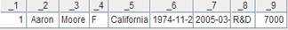 |
|
3 |
=file("D:\\score.txt").import(;1:2) |
With Fi and s omitted, get the data of the first of the multiple segments |
|
4 |
=file("D:\\Department2.txt").import(;"|") |
With Fi, k and n omitted, the whole file is imported |
|
5 |
=file("D:\\Department2.txt").import(;1:3,"|") |
Omit the fields to be imported |
|
6 |
=file("D:\\ EMPLOYEE.txt").import@c(GENDER;1:2) |
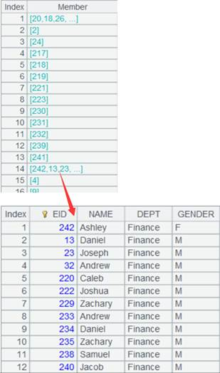 Retrieve the first segment of GENDER field of comma-seperated EMPLOYEE1.txt |
|
7 |
=file("D:\\Department5.txt").import@t(DEPT, MANAGER:int; 1:3,"/") |
The contents of Department5.txt are separated with slash and retrieved by the specified fields DEPT and MANAGER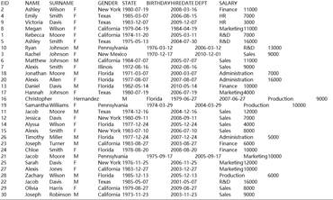
|
|
8 |
=file("D:\\ score.txt").import@e(EID;1:3) |
Return null because there’s no EID field in score.txt |
|
9 |
=file("D:\\Department.txt").import@ts() |
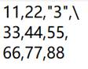 |
|
10 |
=file("D:\\EMPLOYEE.btx").import@b(;1:2) |
Retrieve the first segment of the bin file (a segmented binary file) EMPLOYEE.btx, which is exported from f.export(A,x:F,…). |
|
11 |
=file("D:\\orders.txt").import@mt(;",") |
Increase the speed of retrieving data from the big file. The record order in the result is not the same as that in the file. |
|
12 |
=file("D:\\StuName.txt").import@i() |
StuName.txt has only one column, so return it as a sequence |
|
13 |
=file("D:\\test.txt").import@t() |
Certain field names and field values are quoted
|
|
14 |
=file("D:\\test.txt").import@tq() |
With @q option, quotation marks at both ends of each data item (including each field name) are removed without handling those within
|
|
15 |
=file("D:\\Sale1.txt").import() |
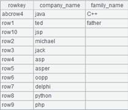 Get all records from Sale1.txt |
|
16 |
=file("D:\\ Sale1.txt").import(#1,#3) |
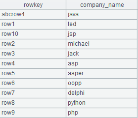 Get the first column and the third column from Sale1.txt |
|
17 |
=file("D:/Dep3.txt").import@cqo() |
Here is the Dep3.txt file:
With @o option, two double quotation marks are treated as one and return the result as follows:
|
|
18 |
=file("D:/Dep1.txt").import@k() |
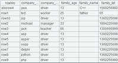 Retain the whitespaces on both sides of the data item |
|
19 |
=file("D:/Department1.txt").import@t(id:int,name;,"|") |
|
|
20 |
=file("D:/Department1.txt").import@td(id:int,name;,"|") |
Delete the record as it contains unmatching data types |
|
21 |
=file("D:/Department1.txt").import@tv(id:int,name;,"|") |
Check data type matching, and, if error reports, throw an exception, terminate the execution and output the content of the problem record |
|
22 |
=file("Dep2.txt").import@tdn(id:int,name,surname;,"|") |
Here’s the file Dep2.txt: 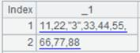 Ignore and discard row 6 and row 8 because the number of columns don’t match that of the first row
|
|
23 |
=file("D://EMP1.txt").import@s(;1:2) |
Don’t split field values to import as a single-field table; ignore the parameters |
|
24 |
=file("D://EMP2.txt").import(#1:date:"yyyy/MM/dd") |
EMP2txt: 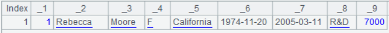 Parse data in yyyy/MM/dd format as a date type field
|
|
25 |
=file("City.txt").import@w() |
Use @w option to return a sequence of sequences 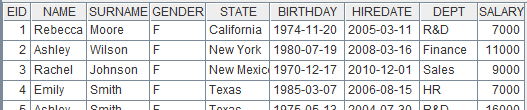 |
|
26 |
=file("D://t1.txt").import@cp() |
Below is file t1.txt:
With @c option, use the comma as the separator by default and return result as follows: 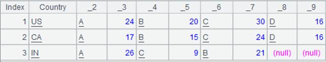 |
|
27 |
=file("D://t1.txt").import@cp() |
With @p option, parentheses and quotation marks matching will be handled during parsing 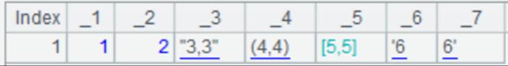 |
|
28 |
=file("D://t1.txt").import@cpa() |
With @a option, single quotation marks are identified as quotation marks
|
|
29 |
=file("D://t2.txt").import@l() |
Below is file t2.txt:
With @1 option, allow line continuation when there is an escape character at the end of the line
|
|
30 |
=file("D://t3.txt").import@f() |
With @f option, just split the file as a string using the separator 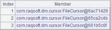 |


Note:
Text file format: Separate records by carriage return, and fields by the user-defined separator. The default separator is the tab.
Related functions:
Description:
Read in records from an entity table and return them as a sequence, record sequence or table sequence.
Syntax:
T.import(...)
Remark:
The function, which is equivalent to T.cursor(...).fetch(), retrieves records from entity table T and returns them as a sequence, record sequence or table sequence.
Parameters:
|
T |
An entity table |
Options:
|
@v |
Enable generating a pure table sequence-based, column-wise cursor |
|
@x |
Automatically close the entity table after data is fetched from the cursor |
Return value:
A sequence/record sequence/table sequence
Example:
|
|
A |
|
|
1 |
for 100 |
|
|
2 |
=to(10000).new(#:k1,rand():c1).sort@o(k1) |
Generate a set of random data |
|
3 |
=to(10000).new(#:k1,rand(10000):c2,rand()*1000:c3).sort@o(k1) |
|
|
4 |
=A2.cursor() |
|
|
5 |
=A3.cursor() |
|
|
6 |
=file("D:\\tb1.ctx") |
Create composite table’s base table |
|
7 |
=A6.create(#k1,c1) |
|
|
8 |
=A7.append(A4) |
|
|
9 |
=A7.attach(table4,c2,c3) |
|
|
10 |
=A9.append(A5) |
|
|
11 |
=A9.cursor(;c2<1000;2:3) |
Divide records in A9’s attached table where c2 is less than 1000 into 3 segments and return columns in the 2nd segment as a cursor |
|
12 |
=A11.fetch() |
Fetch data from A11’s cursor |
|
13 |
=A9.import@vx(;c2<1000;2:3) |
Same result as A12; automatically close A9’s entity table after records are retrieved |